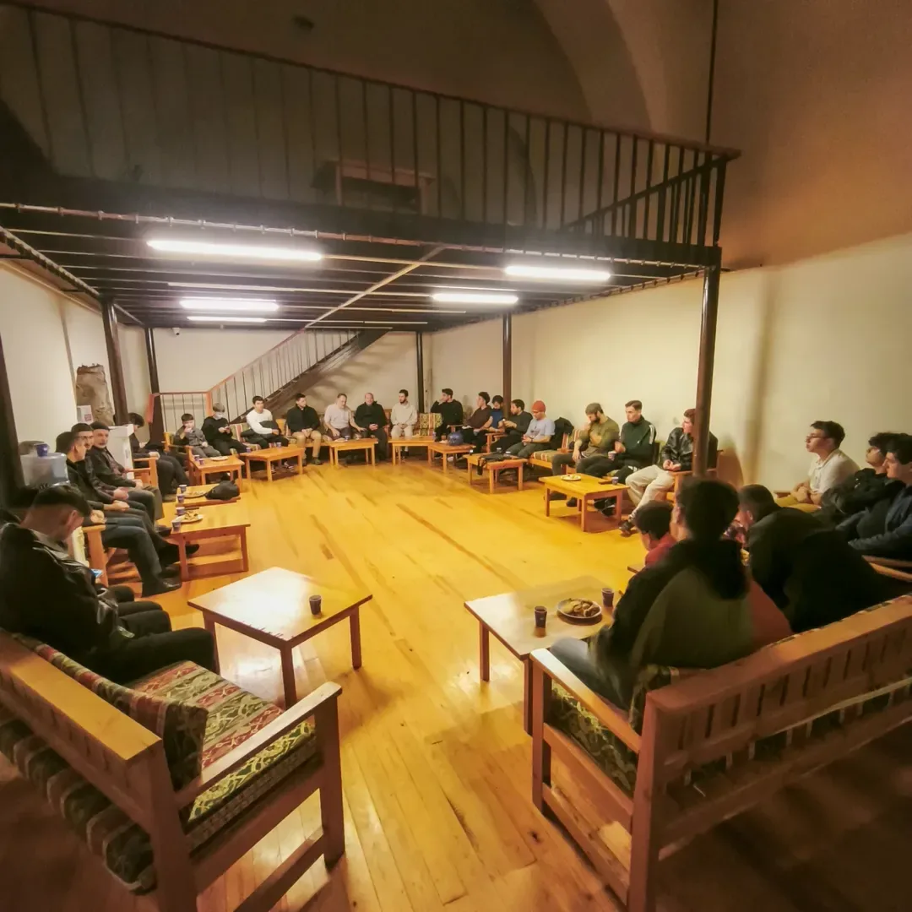
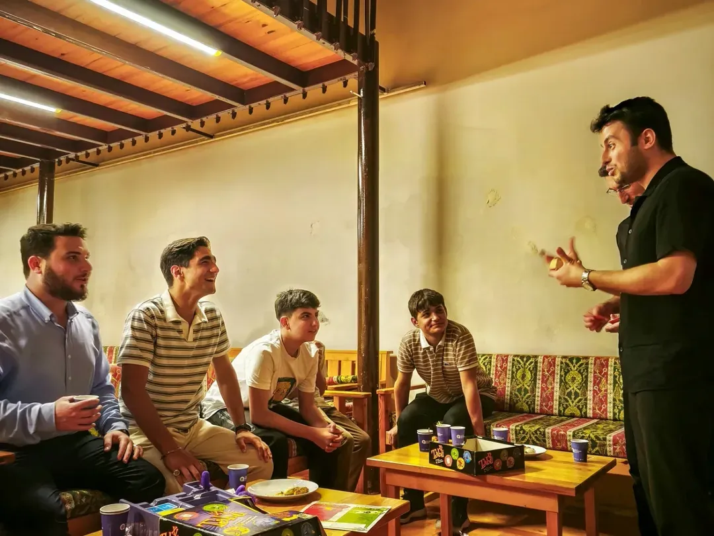
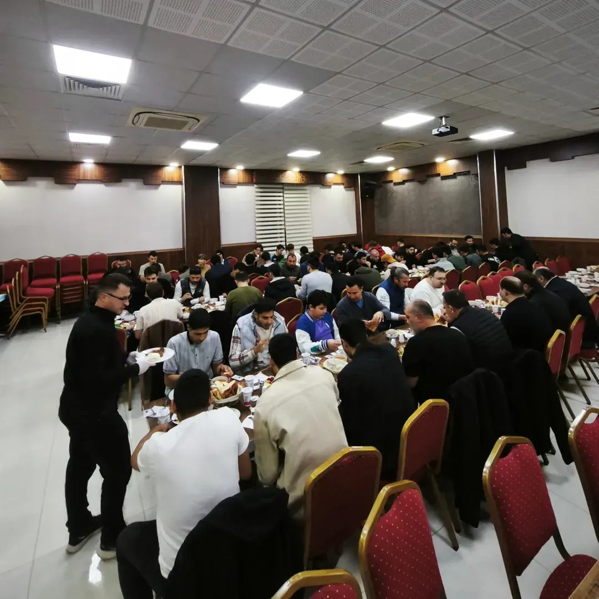
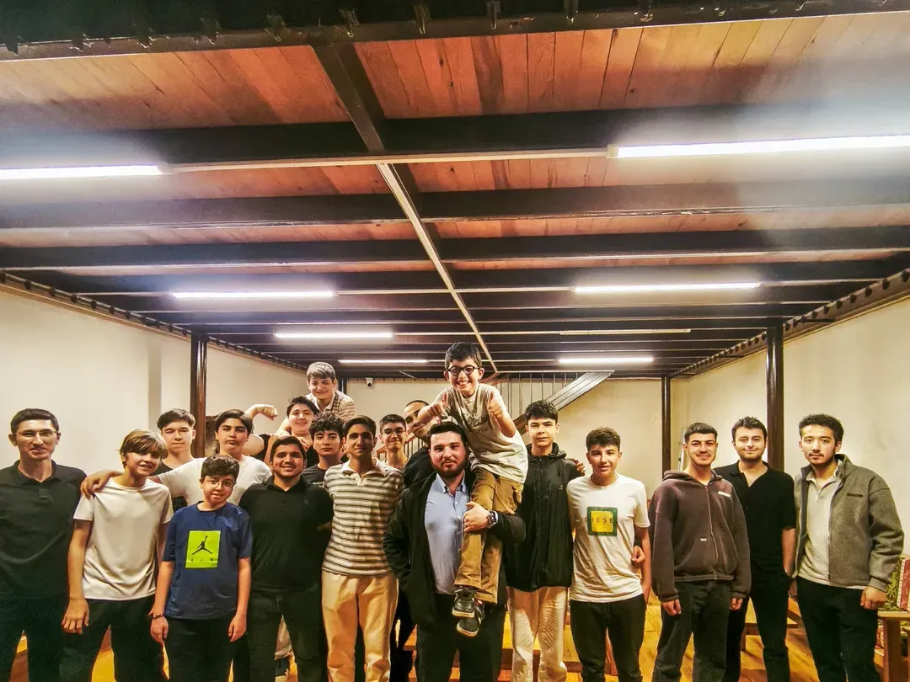

Kaleiçi'nin kalbinde, barların ve müzikli mekânların arasından geçilerek ulaşılan manevi bir kale: Karatay Medresesi. Burada her genç, kendi hayat rotasını bilinçle çizer; her programdan kendine "+1 değer" katarak çıkar.
Kaleiçi'nin hareketli atmosferinde, barların ve müzikli mekânların arasından geçilerek ulaşılan manevi bir kale. 2018'den bu yana gençler burada kendi yollarını buluyor.
2018 yılından bu yana Antalya Kaleiçi'nde faaliyet gösteren Rota Gençlik Buluşmaları, gençlerin hayat yolculuklarında doğru bir rota çizebilmelerine katkı sunmak amacıyla kurulmuş bir gençlik çalışmasıdır.
Barların ve müzikli mekânların arasından geçilerek ulaşılan manevi bir kale olan Karatay Medresesi'nde gerçekleştirdiğimiz buluşmalar; gençlere hem maddi hem de manevi anlamda yeni ufuklar kazandırmayı hedefler.

Karatay Medresesi · KaleiçiFelsefemiz
Her programın hedefi tek: katılımcının bulunduğu noktadan bir adım ileriye taşınması ve kendisine "+1 değer" katması.
Samimiyet · Bilinç · Gelişim · Kardeşlik
"Rota" ismini seçmemizin temel sebebi, gençlerin kendi hayat rotalarını bilinçli bir şekilde çizebilmelerine yardımcı olmaktır.
Uzman isimlerin katıldığı seminerler, manevi sohbetler, Kur'an meali okumaları, münazaralar ve gezilerle her genç; bulunduğu noktadan bir adım öteye taşınır, dünya bakışında olumlu bir dönüşüm yaşar.

Sohbet · RehberlikUzman isimlerden manevi sohbetlere, münazaradan şehir dışı gezilerine; her buluşma, gence yeni bir ufuk açar.
Rota Gençlik Buluşmaları, başlangıçta kendi içimizde gerçekleştirdiğimiz samimi sohbetler ve Kur'an meali okumalarıyla başlayan bir yolculuktu.
Bugün ise birçok uzmanı ve alanında yetkin kişiyi ağırlayan, Türkiye genelinde örnek gösterilen bir gençlik çalışmasına dönüştü.

Topluca · Bir SofraAsıl Gayemiz
Çalışmalarımız boyunca asıl gayemizin Allah'ın rızasını kazanmak olduğunu hiçbir zaman unutmuyoruz. Her faaliyet; insanın maddeye basarak manaya ulaşma yolculuğunda ona rehberlik etme niyeti taşır.
Rota Gençlik Buluşmaları
Genç ve dinamik yönetim ekibimiz, sahip olduğu enerjiyi ve heyecanı tüm çalışmalarımıza yansıtır. Rota; yalnızca bir etkinlik topluluğu değil, gençlerin kendilerini keşfettikleri, fikir ürettikleri ve hayata daha güçlü hazırlandıkları bir gelişim ortamıdır.

Kardeşlik · BirlikteRota; hayatın her alanında fikir sahibi olan, daha bilinçli ve daha donanımlı bireyler yetiştirmek amacıyla yola çıkmıştır.
Rota; hayatın akışında kritik ve analitik düşünce yapısına sahip, kendisine ve topluma faydalı, dünyayı amaç değil araç olarak gören 8 milyar insan topluluğunu hedefler.
Seminerler, sohbetler, geziler ve buluşmalar: Rota Gençlik Buluşmaları'ndan gelişmeler ve yaklaşan etkinlikler.
Seminerler, sohbetler ve geziler — Rota'nın her buluşmasını Instagram'da takip edin.
Kendine "+1 değer" katmak, doğru bir istikamet bulmak ve kardeşliğin sıcaklığını yaşamak için ilk adımı at. Karatay Medresesi'nde sana da yer var.